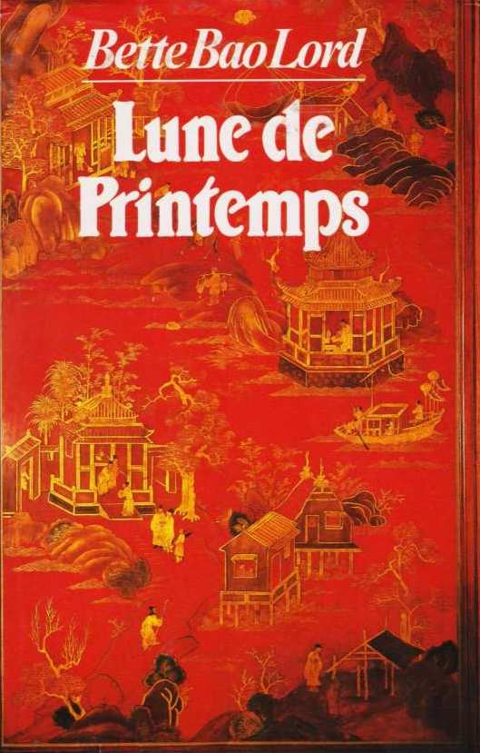

Lune de Printemps de Bette Bao Lord
Ma dernière lecture en date est Lune de Printemps de Bette Bao Lord, paru en France en 1983. Il s’agit d’un long roman sur l’Histoire de Chine de la fin du XIXème siècle aux années 1970’, vue à travers un clan, une femme.
Résumé
Lune de Printemps est une fillette qui vit dans les cours de son clan, les Chang, à Sou-Tcheou, dans le Sud de la Chine. Son histoire commence peu de temps après qu’on lui a bandé les pieds, selon la tradition. Son esclave, Fleur de Prunier, a pris soin d’elle, mais elle doit être envoyée dans une autre maison, en tant que concubine. Voyant que la jeune femme est malheureuse, Lune de Printemps, du haut de ses 6 ou 7 ans, demande au Vénérable, le Patriarche du clan, de garder l’esclave dans la maison des Chang. Le vieil homme ne peut empêcher le départ de Fleur de Prunier, il est redevable envers l’homme qui réclame une concubine et il a promis. Il lui est impossible de revenir sur sa parole. Ainsi, Lune de Printemps apprend sa première leçon sur l’honneur du clan, qui est plus important que tous les bonheurs individuels. La jeune Fleur de Prunier finit par se suicider, marquant à jamais l’esprit de Lune de Printemps.
Le Vénérable meurt peu de temps après et son fils aîné, Talent Courageux, alors étudiant en Amérique, est rappelé par le clan pour prendre la place de Patriarche, comme le veut la tradition. Il apprend les malheurs de Lune de Printemps, qui ne veut plus être servie depuis que son esclave - mais surtout amie - s’est tuée. Son oncle aîné lui propose alors de l’instruire, pour lui changer les idées. Elle devient la première femme lettrée du clan, contre l’avis des aînées.
Quand elle atteint l’âge de 16 ans, sa mère lui cherche un époux. Celui sélectionné ne plaît pas au Patriarche, qui a beaucoup d’affection et d’estime pour sa nièce. Il va à l’encontre de la volonté des femmes et décide de trouver lui-même le mari de Lune de Printemps. C’est Heureuse Promesse, son ami de Pékin qui a étudié avec lui en Amérique, qui est choisi. L’oncle est tout de même malheureux de laisser partir sa nièce, qui est pourtant si heureuse de quitter les cours de son clan. Son époux est bon et charmant, mais il rejette la tradition. Lune de Printemps respecte son souhait et ils apprendront à se connaître et à s’aimer à leur rythme, au détriment de tous.
Alors que Lune de Printemps est heureuse - malgré le caractère de sa belle-mère qui ne semble pas l’apprécier - et qu’elle attend leur premier enfant, Heureuse Promesse décide de partir s’enrôler activement dans la révolution qui menace le pays. Lune de Printemps se retrouve veuve et au service de sa belle-mère alors qu’elle n’a que 18 ans.
Le contexte politique instable a ruiné le clan d’Heureuse Promesse. Il ne reste que la belle-mère de Lune de Printemps qui prend un fils adoptif pour perpétuer le nom du clan et son honneur. En effet, Lune de Printemps a eu une fille, Jade Lustré. Toutes deux ne servent à rien, si ce n’est à amenuiser davantage les richesses de la vieille femme. Elles sont renvoyées dans la maison des Chang.
Retrouvant son clan, Lune de Printemps réalise que l’instabilité a aussi touché sa maison. Ses oncles, qui sont tous des lettrés, prennent part à la révolution et bientôt, ils doivent fuir, changer d’identité et attendre que le temps passe pour sauver leur vie. Lune de Printemps laisse sa fille dans une école de missionnaires catholiques et s’installe avec Talent Courageux, son oncle aîné. Éprouvant de la tendresse l’un envers l’autre, malgré leur différence d’âge, ils vivent leur amour avec passion jusqu’à ce que Lune de Printemps soit rappelée par sa belle-mère et ses devoirs envers elle. Elle quitte Talent Courageux pour retourner à Pékin et réalise qu’elle attend un enfant. Pour éviter la honte et la disgrâce, sa servante Bouboule lui propose de partir à la campagne, chez une ancienne servante qui l’aime beaucoup, et d’y mettre au monde l’enfant, qu’elle laissera là-bas. Elle s’exécute et quitte son fils avec déchirement.
Quelques années plus tard, sa belle-mère, mourante, réclame l’enfant dont elle avait eu connaissance sans en parler à Lune de Printemps. Elle veut le prendre comme fils adoptif pour qu’il honore son clan et sa tombe. Lune de Printemps reprend le garçon aux paysans et l’élève donc comme s’il était son petit frère. Après la mort de sa belle-mère, elle récupère Jade Lustré à l’école catholique et ils retournent tous à Sou-Tcheou. Lune de Printemps craint que Talent Courageux s’aperçoive que le petit garçon, nommé Promesse Durable, est en réalité son fils, mais il ne dit rien qui laisse croire qu’il a compris.
Les années passent, la stabilité politique de la Chine est plus que précaire, des révoltes et des guerres éclatent. Lune de Printemps et ses enfants quittent une fois de plus le clan. Jade Lustré a changé. Elle ne respecte plus la tradition chinoise et se donne pour mission de venir en aide aux plus démunis. Elle est de plus en plus active dans la révolution et met plusieurs fois le clan Chang en danger. Le Patriarche est finalement abattu dans la rue alors qu’il venait la secourir. La famille est démantelée, tout le monde doit fuir et se cacher. Lune de Printemps part avec le fils de Jade Lustré alors que celle-ci est en fuite. Durant des années elle résistera, jusqu’à ce que le Parti Communiste dont elle fait partie arrive au pouvoir. Elle retrouve alors sa famille, qui a presque tout perdu.
Au fil du temps, la Chine communiste commence à chercher des traîtres dans ses rangs et Jade Lustré et son époux sont inquiétés à cause d’une lettre envoyée en Amérique, pour Promesse Durable qui est parti vivre là-bas. Lune de Printemps voit sa fille mourir et pense que son clan a éclaté et que tous ces malheurs se sont répandus à cause de ce qu’elle a fait, des années auparavant, en ayant un fils avec Talent Courageux et en le reprenant aux paysans qui avaient juré de prendre soin de lui. Elle s’en veut, mais elle est très vieille et en repensant à sa vie, comprend qu’elle ne regrette rien. Vers la fin des années 1970’, alors que le contexte politique est plus calme, elle retrouve son fils Promesse Durable et parvient à réunir ce qu’il reste de leur clan sur les tombes de leurs ancêtres à Sou-Tcheou.
Ce que j’en pense
C’est l’histoire de toute une vie. Je me suis déjà aperçu, à plusieurs reprises maintenant, que ce type de roman est difficile à lire. Je commence à comprendre pourquoi. Le récit d’une « tranche de vie » est plus facilement joyeux. Ce n’est pas systématique, mais l’histoire peut aisément être portée vers un happy end, ne serait-ce que pour satisfaire le lecteur. Dans l’histoire d’une vie complète, comme celle de Lune de Printemps, les moments de bonheur sont fugaces, éphémères, comme dans la réalité. L’histoire de cette femme est triste, sa vie n’a pas toujours été une partie de plaisir, elle a dû faire de nombreux sacrifices au nom de la tradition, de ses ancêtres et de l’honneur du clan, mais elle a aussi vécu de bons moments. Ces moments précieux paraissent peser lourd dans mon cœur de lectrice, mais ils sont si rares !
Un en particulier me touche. Je l’ai trouvé magnifique, mais si triste. Il s’agit du moment où Lune de Printemps apprend à Talent Courageux qu’elle doit le quitter pour retourner auprès de sa belle-mère, que leur bonheur s’arrête ici. Elle ne dit pas un mot, lui montre seulement la convocation qu’elle a reçue. Voici l’extrait :
Soudain, il éclata de rire. Son rire sonnait creux, comme celui des marionnettes dans les spectacles pour enfants.
« C’est trop drôle. Ce sont les mots mêmes que j’ai mis dans le faux message que j’ai envoyé à Sou-Tcheou l’été dernier. Je cite : Lune de Printemps demandée immédiatement. Signé : Belle-mère. Fin de citation. Les dieux se servent de nos mensonges pour nous hanter ! Comique, n’est-ce pas ? »
Elle hocha la tête mécaniquement.
« Alors vous devriez rire. Pourquoi ne riez-vous pas ? » Il se leva d’un air décidé, et déchira la dépêche en menus morceaux avant de la jeter au feu. Elle regarda les bouts de papier s’enflammer, se réduire en cendres et tournoyer lentement en l’air, jusqu’à ce qu’ils disparussent dans la cheminée.
Ramassant le pique-feu il ranima les flammes.
Pour elle, pas un mot ne lui venait. C’était comme si la pièce était comble et ne pouvait accueillir ni pensée, ni plainte.
Tout d’un coup il laissa tomber le tisonnier et vint à elle, la remettant brusquement sur pied. « Vous regrettez notre amour ? » Il la regardait dans les yeux, réclamant une réponse.
Elle ne répondit pas, se rappelant que son mari lui avait déjà posé la même question. Est-ce que le bonheur finit toujours comme ça ?
Il la serra contre lui et demanda encore : « Vous regrettez notre amour ? Il faut que je sache. »
Pourquoi le demandent-ils ? pensa-t-elle. Est-ce qu’on demande au soleil s’il regrette de briller ? « Non, je ne le regrette pas, dit-elle avec tendresse. Je regrette seulement que nous devions nous séparer aujourd’hui.
— Faut-il que ce soit aujourd’hui ?
— C’est plus facile aujourd’hui que demain », répondit-elle. Il ne nia pas la vérité.
En silence, ils s’étreignirent.
Ce passage se poursuit avec l’espoir de Talent Courageux de pouvoir la retrouver plus tard, et la détermination de Lune de Printemps à céder à « une vie de sacrifices - de devoir - d’honneur ». Ils seront séparés pour toujours. Il aimerait changer cela, il se met en colère et énumère tous les maux qu’ils ont eus à endurer, ainsi que la Chine, mais il sait qu’il ne peut rien faire. Les Chinois sont ainsi. « [Ils cèdent] toujours - à la tradition, aux étrangers, à la famille, à l'autorité, au devoir. À tout et à tous, vivants et morts, excepté à [leurs] besoins, [leurs] rêves, [leurs] passions. » Talent Courageux sait que Lune de Printemps et lui « [vivront], séparés, des vies [qu’ils n’ont] pas choisies. »
C’est un passage bouleversant, plein d’émotions et qui décrit parfaitement comment les individus ne peuvent être heureux quand ils sont si attachés à l’honneur et au devoir.
Pour en revenir à ce que je pense globalement du roman, je dirais que ce récit est dépaysant. Les descriptions sont sensibles et imagées, les cours, les robes de soie colorées, les fêtes avec tous les membres du clan, les liens forts entre les personnages, etc. Tout est réaliste et détaillé. La tradition chinoise parait sévère, les rituels rigoureux. Pourtant, lorsque Talent Courageux rentre en Chine après la mort du Vénérable, ou quand Promesse Durable revient après des années passées en Amérique pour retrouver Lune de Printemps - le parallèle entre les deux scènes, l’une au début du roman et l’autre à la fin, est saisissant -, le contraste entre la tradition chinoise, disparue, pourtant ancrée dans chaque Chinois, et le mode de vie des Occidentaux est frappant. Finalement, la discipline et la rigidité de la tradition chinoise paraissent bien plus respectueuses et authentiques envers les autres que la nonchalance des Américains.
Le style est agréable et fluide, la lecture est aisée et plaisante. J’avais parfois du mal à me remettre à lire, mais une fois que j’y étais, je ne m’arrêtais plus. Toute la partie concernant la vie de Jade Lustré, ses combats et ses problèmes liés au Parti Communiste m’a moins intéressée. Sans doute parce que Lune de Printemps est moins présente et que les aspects politiques, qui sont au cœur de l’histoire, me paraissent bien compliqués à saisir. C’était déjà pour cette raison que plus tôt dans ma lecture, j’avais du mal à m’attacher à Noble Talent, l’oncle soldat de Lune de Printemps. L’amour et la tendresse me plaisent davantage que la guerre et la mort.
La fin est plutôt belle, malgré tous les malheurs qui ont marqué la vie de Lune de Printemps. On sent beaucoup de tristesse et de mélancolie dans les dernières lignes, alors que finalement nous savons que cette femme ne regrette rien de sa vie et est heureuse de se recueillir une dernière fois sur les tombes de ses ancêtres en compagnie de son clan.
Conclusion
Lune de Printemps est un excellent roman, sans doute l’une de mes plus belles lectures. J’en garde ici un bon résumé, mon extrait favori, et un aperçu de ce que j’en ai pensé parce que je ne crois pas être capable de le relire. Comme pour Mais moi je vous aimais, il s’agit d’une histoire trop triste et qui demande de mettre beaucoup de soi dans la lecture. C’est assez déprimant, même si j’ai adoré.
Finalement, ces histoires qui traitent la vie entière d’un personnage donnent les meilleurs romans. En tout cas, dans mon top de lecture, il y en a déjà deux. Cela m’amène à me dire que je ne dois pas fuir ce genre de lecture.